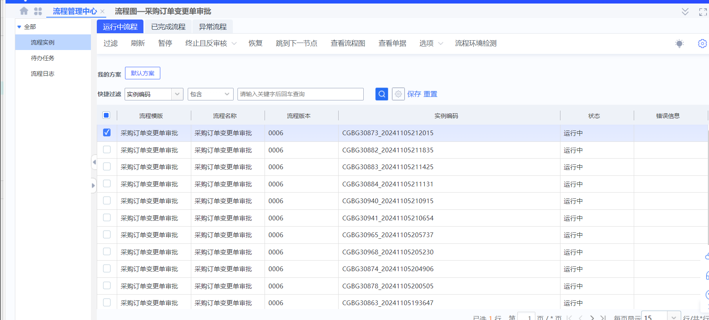
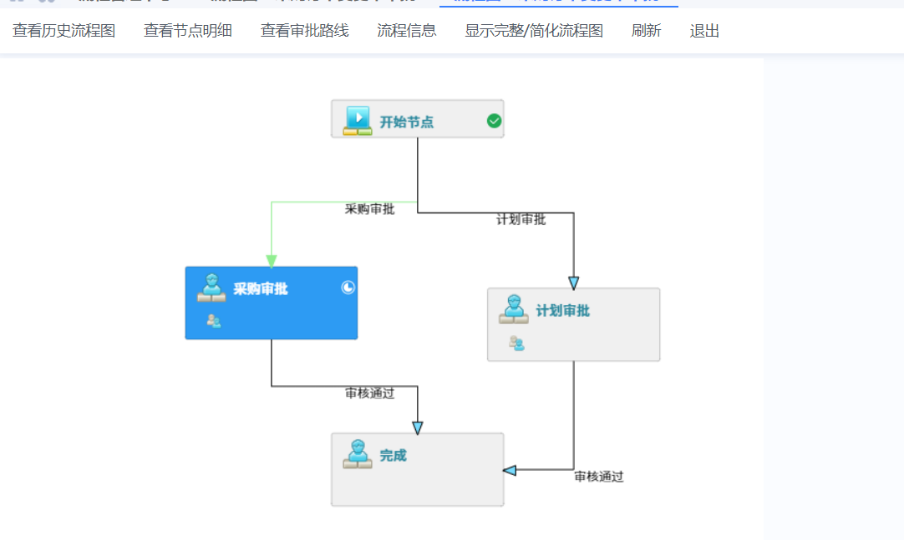

参考K3流程控制中心，将每个流程线上化（1）流程线上化，可以自动生成流程图，方便理解和管控。（2）人员变动或者流程调整，可以直接再系统配置，不需要IT那边重新开发。（3）各个流程可以保留历史版本及上下游内容（4）新来的人员可以快速查看流程及涉及到自己岗位的内容，快速上手。

计划：（1）系统流程目前梳理了框架，看看框架里面是否有需要调整或者遗留的；（2）基于框架，梳理各个环节的详细流程及审核逻辑，接入SSO流程控制中心及待办。